Initial preset
The audio file for this example is a square wave signal being enveloped by a Gaussian waveshape
at 3Hz. The timbre of the sound is a sine wave oscillator waveshaped to sound like a square.
To hear this just click the On button.
The steps are as follows:
Click:On
MainPulsarSynthesizer
A train of pulsars going from the infrasonic range to the continuous tone range.
It starts at 3Hz and moves all the way up to 100Hz and back down to 0.3Hz. By moving the
Infrasonic - Fundamental Frequency slider all the way to the right the train of
pulsars will begin to fuse together into a continuous tone when it reaches 20Hz. The Audio Range -
Fundamental Frequency slider is then moved all the way up to 100Hz where the frequency of
the pulsaret envelope oscillator will start to modulate the frequency of the Pulsaret
oscillator. The fundamental frequency is then lowered to a frequency of 0.3Hz.
The steps are as follows:
Fundamental Frequency 0 to 20Hz - Infrasonic Range: 3 to 20Hz
Fundamental Frequency 20 to 100Hz - Audio Range 20 to 100Hz
Fundamental Frequency 20 to 100Hz - Audio Range 100 to 20Hz
Fundamental Frequency 0 to 20Hz - Infrasonic Range: 20 to 0.3Hz
The picture below shows a spectrogram and waveform view of the sound file. It starts with
"prickly" or "spiky" structure and gradually overtime they fuse together into a "block".
This "block" area is where the individual pulsars are fused together into a tone in the middle
of the picture. They are separated into individual pulsars again because the fundamental frequency
is lowered back down again. MainPulsarSynthesizer
In this example you will hear the Duty-Cycle Silence Ratio Slider being moved from
0.0 to -2.1. As the slider is slowly moved left the harmonics of the signal begin to change. This is
because the duty-cycle length of the square wave signal is being shortened to a narrower and narrower
length. MainPulsarSynthesizer
The steps are as follows:
Duty cycle-Silence Ratio:slowly move in the left direction until the signal silent
The image below shows a pulsaret with the duty cycle silence ratio slider at 0.0
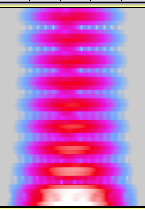 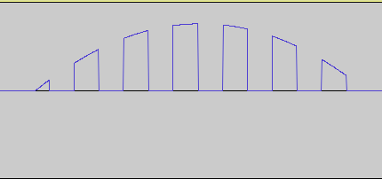The image below shows a pulsaret with the duty cycle silence ratio slider at -9.6
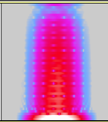 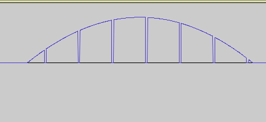In this example the fundamental is decreased to 1.05 and the buffer for the envelope of
the duty-cycle silence ratio is engaged by pressing the "Load Buffer" button and then the "Play Buffer"
button. The harmonic content of the pulsarets are modulating at various rates because the Duty cycle-Silence Ratio Buffer Rate
slider is being increased to its maximum level. The fundamental frequency is then increased to 15Hz so the
envelope that is changing the duty cycle is much more noticeable. The rate of the buffer-envelope
is then decreased to 0.002. By listening carefully there is a wavering sound from the duty-cycle silence ratio
varying gradually over time. MainPulsarSynthesizer
The steps are as follows:
Fundamental Frequency 0 to 20Hz - Infrasonic Range: 3 to 1.05Hz
Click: Load Buffer and Play Buffer
Duty cycle-Silence Ratio Envelope Rate - 0.002 to 0.3: increase from 0.002 to 0.3
Fundamental Frequency 0 to 20Hz - Infrasonic Range: Increase to 15Hz
Duty cycle-Silence Ratio Envelope Rate - 0.002 to 0.3: increase from 0.3 to 0.002
The image below shows a pulsaret from this sound file that shows its harmonic content cut off by the varying envelope.
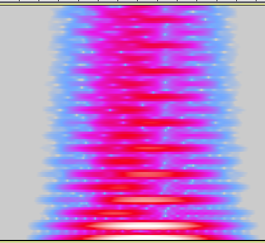 This sound file demonstrates the overlap effect that happens when the varying duty cycle silence ratio
is set at the edge of silencing the signal. In order for the synth to do so it must be programmed in a particular way. MainPulsarSynthesizer
The steps are as follows:
Duty cycle-Silence Ratio slider: 1.8
Click: Load Buffer and then Play Buffer
The buffer envelope will affect the pulsarets by either muting them or cutting them off in mid waveform, as shown below
By moving the Duty cycle-Silence Ratio Envelope Rate slider, this will mute out some of the pulsarets in the train and will cut other pulsarets off in mid waveform. This produces a very rhythmic and percussive sound to the pulsar train. The fundamental frequency can also be increased to create a throbbing bundle of pulsars. By moving the main duty cycle silence ratio slider to 1.8 and playing around with the play back rate of the buffer and the fundamental frequency a lot of interesting rhythmic structures can be created.
This example will demonstrate the different waveshapes that can be inserted into the buffer to modulate the duty cycle
Silence Ratio. The waveshape used in the preset is a gaussian waveshape shown below in a waveform view:
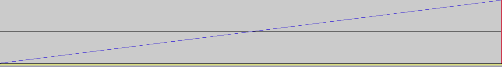
The figure above shows a line going from -1 to 1. This will modulate the
DCOffsetGain between this range, by starting at -1 and moving all the
way up to +1 and then looping back round to -1 again.Pulsar Synth with a line shape in the buffer
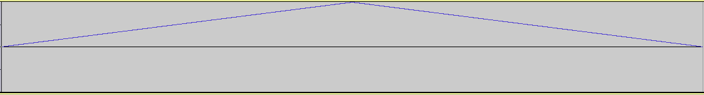
The figure above shows a variation on the line. The line starts at 0
and moves up to +1 and instead of flicking back to 0 again it goes in the
opposite direction back down to 0. This sound can be clearly heard in
the example, it produces an interesting effect where the duty cycle is
varying back and forth between the two extremes 0 and +1.Pulsar Synth with a triangle shape in the buffer
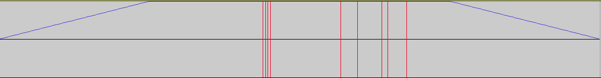
The figure above shows a three stage line segment that is very much like
the triangle where it rises from 0 to +1 and retuens back down again. In
this example, when it reaches +1 it stays there for a length of time before
decaying to 0 again. The audio demonstration is in two parts;
the first part with a fundamental frequency of 3Hz and the second part at 20Hz.
This is to demonstrate the envelope in both the inframsonic and continuous
tone range, the shape of this envelope is clearly heard in the continuous
range. Pulsar Synth with a Three-Stage-Line- shape in the buffer
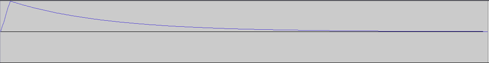
This figure shows a shape with an exponential decay curve. This is very much
like the triangle shape only it has a short attack and a longer decay time
that moves smoothly downwards as opposed to a liner decay that goes straight
down.Pulsar Synth with an EXPO- shape in buffer
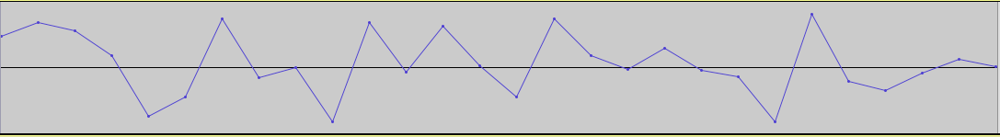
This figure shows an extremely short burst of noise (about 1ms long). This is
to modulate the DCOffsetGain node in a very chaotic way. By speeding up the
playback of the buffer this will produce a very erratic change in the duty
cycle silence ratio between -0.8 and +0.8. By slowing it down this would
create a clearer sound but the duty cycle silence ratio will vary back and
forth in an uneven pattern. In the first part of this example the fundamental
frequency is at 3Hz with the playback rate of the buffer at 0.3, this produces a
noisy train of pulsars as the DCOffsetGain is modulating rapidly. In the second
part the fundamental frequency is at 12Hz with the playback rate of the buffer
at a low setting of 0.0001299. This produces a smoother varying duty cycle
silence ratio.Pulsar Synth with a short snippet of white noise in the buffer
Any sound file can be used to modulate the duty cycle silence ratio. The user
can even customize their own by using audio editors such as Audcaity and
import them into the buffer to modulate the DCOffsetGain node.
Below is a sound is a customized sound file:
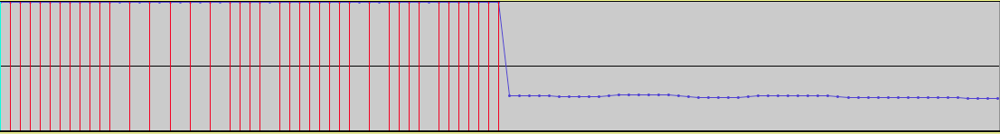
The figure above shows a screenshot of a waveform in Audacity. This represents a
waveform where half of its period is at +1 and the other half is at -0.5. This
was exported as a sound file and imported into the buffer. When using this
file it will move the DCOffsetGain node to +1 for half of its period and back to -0.5
for the other half. This will modulate the duty cycle silence ratio as a type of
on/off switch for the pulsarets. This is very similar to a feature of
Advanced Pulsar Synthesis, known as the burst masking ratio.
The feature is used to break up the pulsar train by deleting "individual pulsarets,
leaving an interval of silence in their place" (Roads 2001, pp.149-150). This ratio can
be set by specifying exactly how many pulsarets to mask(delete) and how many to allow
through. For this synthesizer the burst masking ratio is controlled using Duty cycle
Silence Ratio Envelope Rate - 0.002 to 0.3 slider to set the length of time that the
sound file will be at +1 and -0.5. In this example a Quasi-Gaussian curve was used as
the pulsaret envelope, along with a Gaussian arbitrary waveshape.Pulsar Synth with a single cycle of a square wave in the buffer to produce a burst mask effect.
The steps are as follows:
Duty cycle-Silence Ratio:-0.2
Click:Load Buffer and Play Buffer
Duty cycle-Silence Ratio Envelope Rate - 0.002 to 0.3:0.002
Fundamental Frequency 0 to 20Hz - Infrasonic Range:11Hz to 7Hz to 4hz
The "expodec" and the "three stage line segment" sound files were borrowed from Nathan Wolek's granular toolkit LowKeyNW (2014).
A sound file can be used instead of an oscillator for the pulsaret waveform. This allows for many different varieties of timbres
as a sound file of any length can be used. As the pulsaret envelope shapes this file over time the play back rate, volume and pitch
can be changed to sculpt the sound. Sound files of short duration seem to be the most effective at creating pulsarets, although long sound files
can be useful in creating interesting rhythmic structures. There are two examples below, one short file and one long file: For the short file a 100ms long snippet of a metallic ringing sound from the tines of a fork is enveloped by a Gaussian pulsaret envelope. In the
sound file the fundamental is increased to about 12Hz than the play back rate is increased to about 3.1 and is then decreased to 0.6.
The fundamental is then decreased to 1.7Hz, to achieve an enharmonic metallic swell.Pulsar Synth with a sound file as a pulsaret waveform: Metallic Ringing
The steps are as follows:
Short Sound File
Fundamental Frequency 0 to 20Hz - Infrasonic Range: 3 - 12Hz
Playback Rate of Pulsaret Waveform: 0.0 to 3.1 to 0.6
Fundamental Frequency 0 to 20Hz - Infrasonic Range: 12 - 1.7Hz
For the long sound file a recording of a voice was used. As speech is not a periodic waveform, this produced an uneven pulsar train. Certain words are cut out by the pulsaret envelope and others are enveloped which can be heard clearly in the pulsar train. The example starts with the sound file playing at a fast rate of 3.8 and the fundamental at 12Hz is then moved down to 5.6Hz. The playback rate of the pulsaret waveform buffer is then decreased to 1.2 which then reveals what the voice is saying, "I am not speaking English".
Pulsar Synth with a sound file as a pulsaret waveform: Voice
The steps are as follows:
Long Sound File
Playback Rate of Pulsaret Waveform slider: 0.0 to 3.8
Fundamental Frequency 0 to 20Hz - Infrasonic Range: 3Hz to 12Hz to 5.7Hz
Playback Rate of Pulsaret Waveform slider:3.8 to 1.4
This long sound file is downloaded from freesoung.org (krzysiunet 2016) [last accessed 17th of August 2016].
The pulsaret waveform can be shaped in many different ways when connected to the WaveShaperNode. By using many different transfer functions this can affect the timbre and texture of the oscillator's signal. Below there are two types of transfer functions used.
Decaying multicycle sinusoud
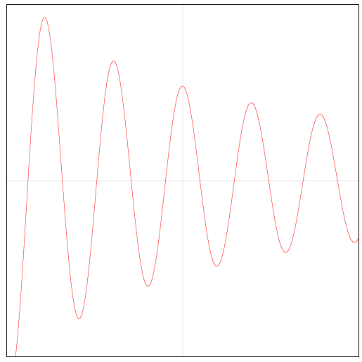
Above is a figure of a multicycle sinusoid. The WaveShaperNode is sculpting a sine wave signal to create this shape for the pulsaret wave form. In the example you will hear the un-waveshaped signal, which is just a sine wave oscillator being enveloped by a gaussian curve, during the second half you will hear the waveshaped signal. A decaying Multicycle sinusoud is one of many arbitrary waveforms suggested by Curtis Roads in his book Microsound (2001,p.140)
Pulsar Synth with a Decaying-multi-cycle-sinusoid- as a pulsaret waveform
Multiple Squares
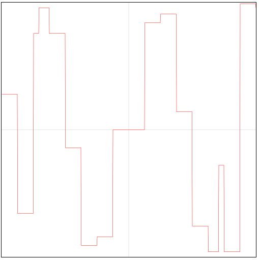
The figures shows a very jagged shape that the sine waveform is transformed to, this produces a hollow sounding square wave. Pulsar Synth with multiple squares as a pulsaret waveform
This is the part of the synth that forms the envelope for the pulsarets. This is done using the WaveShaperNode from the Web Audio API. With the use of transfer functions we can form many arbitrary envelopes, such as the one described by Roads (2001, p.141). These pulsaret envelopes affect the timbre and texture of the pulsarets because of the shape applied to them.
Below are a number of pulsaret envelopes:
Sinc Function
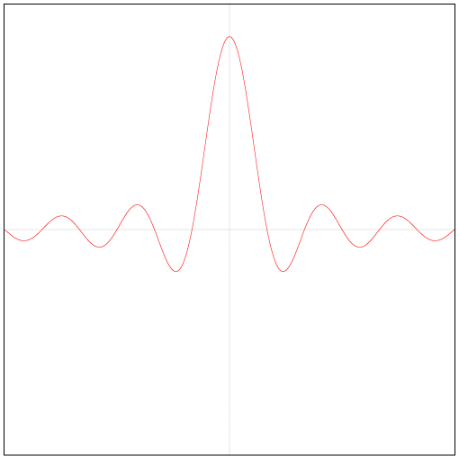
The figure above shows a sinc function that is acting as the envelope for the same decaying multicycle sinusoud used in demonstration 8. In the recording the fundamnetal frequency is set at 8.5Hz.
Pulsar Synth with a Sinc pulsaret envelope
Gaussian Function
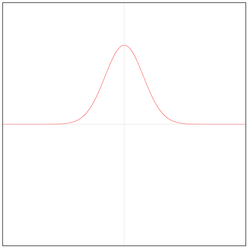
The figure above shows a Gaussian curve that is used to shape the pulsarets. The shape has a tendency to create waveforms in such a way that it focuses most of the frequencies of its formant in a very condensed spot that is set by the duty cycle silence ratio. This is noted in (Roads 2001, p146).
Pulsar Synth with a Gaussian pulsaret envelope
In the next audio example the Gaussian envelope is shaping a decaying multicycle sinusoud, a waveform and spectrogram is shown below:
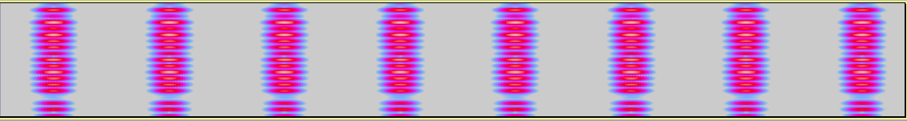
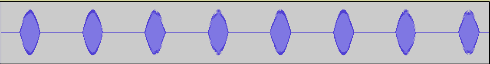
There is a second version of this which is the same pulsaret envelope but the WaveShaperNode for the decaying multicycle sinusoud is disengaged leaving just the clean sound of the sine wave from the pulsaret oscillator.
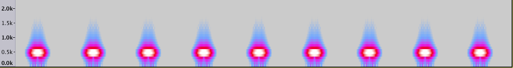
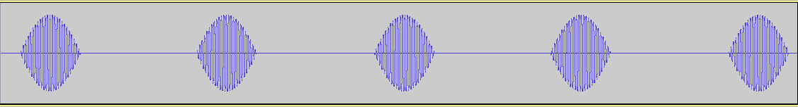
Note in the spectrogram figure a clean and clear separation between the pulsarets and the overall shape is very similar to the Gaussian curve above.
This can be achieved by clicking on the "Stop Arbitrary Shaper" button. Pulsar Synth with a Gaussian pulsaret envelope
The figure below show the interface for the pulsar train scheduler.
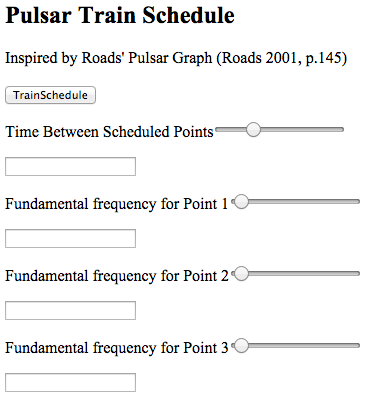
This is insprired by the pulsar graph interface discussed by Roads in (2001, p.145). The is where rate of emission (fundamental frequency) of the pulsar trains can be automated over time. By moving the "Time Between Scheduled Points" slider this will equally space the points at which the fundamental frequnecy must reach in seconds. The three sliders below it will specify what the fundamental frequency must be at that point.Pulsar Synth with a parameter that automates the fundamental frequency
Below an example displays the required set up:
Time Between Scheduled Points: 8.5 seconds
Fundamental frequency for Point 1: 1.5
Fundamental frequency for Point 2: 34.12
Fundamental frequency for Point 3: 8.6